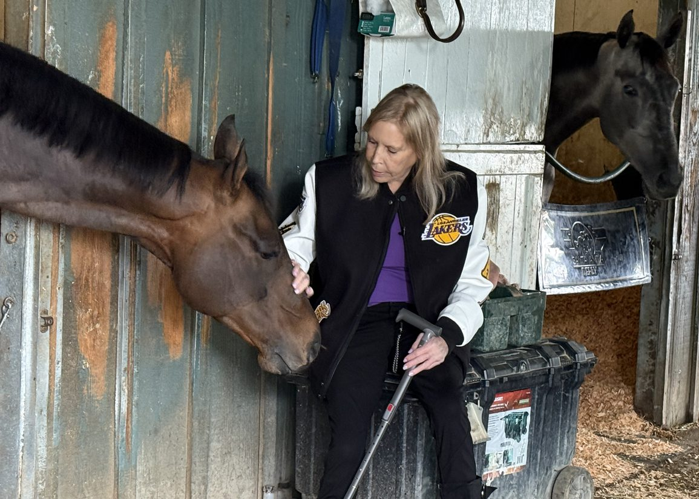

Janie Buss, heredera de los Lakers, construye su propio legado en el turf con Purple Rein Racing
La empresaria estadounidense Janie Buss, miembro de la familia propietaria de Los Angeles Lakers, ha dado el salto al mundo de las carreras con Purple Rein Racing, una cuadra que busca labrarse su propia identidad en el galope profesional.

Foto: thoroughbreddailynews.com
Janie Buss, integrante de la familia propietaria de Los Angeles Lakers desde 1979, ha fundado Purple Rein Racing como una apuesta personal en el universo del turf. La iniciativa representa su incursión en las carreras de pura sangre, un terreno donde pretende forjar un nombre propio al margen del imperio deportivo familiar construido por su padre, Jerry Buss, y sus hermanos en el baloncesto profesional.
La cuadra toma su nombre de los emblemáticos colores púrpura y oro que identifican a la franquicia angelina, aunque Purple Rein Racing busca su propio camino en los hipódromos. Buss ha manifestado su intención de marcar una diferencia en el sector, adentrándose en un deporte con el que la familia mantuvo contacto en los años previos a su despegue en la NBA, cuando veraneaban en localidades costeras.
El proyecto supone un nuevo capítulo para los Buss en el ámbito deportivo, esta vez desde las gradas de los hipódromos y no desde las canchas de baloncesto.
— Redacción de Galope al Día